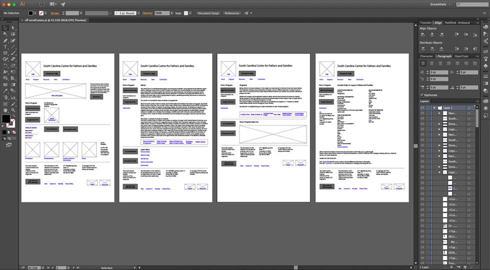
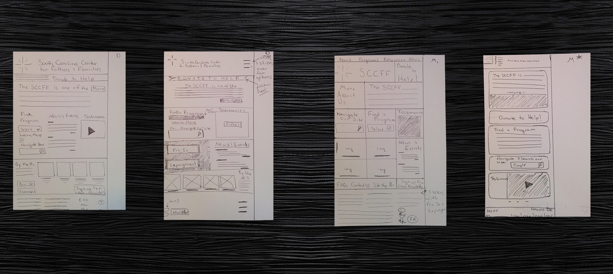
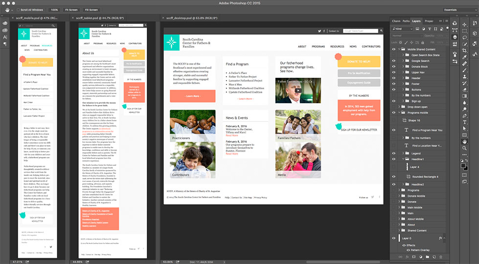
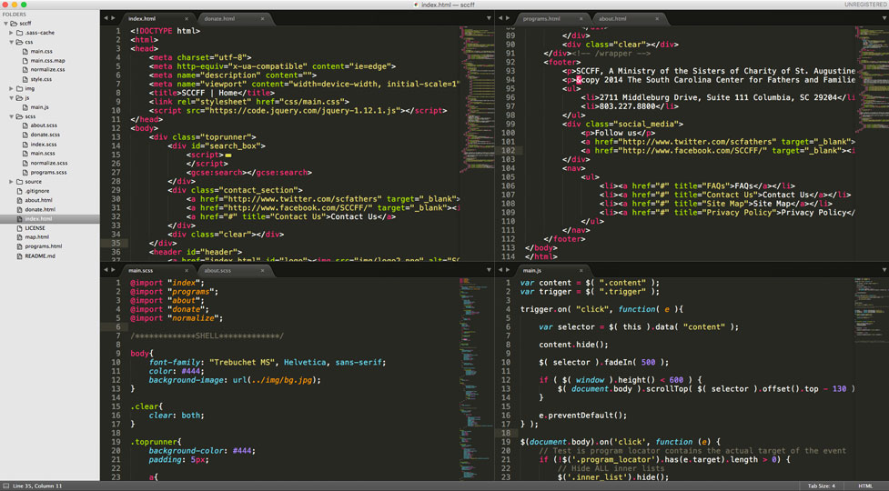

Project Scope
User Experience
Site architecture redesign and mapping
User Interface
Redesign of existing website and components:
- Homepage
- About Us Page
- Programs Page
- Donation Page
Development
- HTML5
- CSS3
- Sass
- JS
- jQuery
Discovery
-
What does the company/service provide?
CFF provides services, resources and educational events to help build families and communities by empowering fathers and showing them how to be leaders and mentors for their kids.
-
Who is the target audience for the site and what are they looking for?
CFF serves around 1200 fathers annually with programs designed to teach fathers the skills necessary to be providers, partners, and community leaders. Programs like A Father’s Place and Man 2 Man are helping hundreds of fathers find their place in the world. Fathers who visit the site are looking for help for a host of problems. Some of them are recovering from their past mistakes and want to rebuild their families. Some are having difficulty being providers. Some fathers just need someone to talk to about their problems. The site should provide information about the programs and how to become a participant. The mission should be clear and express the values of this faith-based organization.
-
What are the company’s primary goals/objectives?
CFF wants to promote their programs to fathers in need. They want to provide resources and educational materials for fathers that might be struggling with how to handle their kids and the difficulties of fatherhood. They want to help fathers rebuild their lives and reconnect with their loved ones. They want to teach them how to provide for their families and how to create a loving environment for their children. They also want to encourage users to contribute to the nonprofit. The cost of putting one father through the program is about $2k, so they need donors.They really need to collect more donations through the site.
-
Describe the company’s brand, personality, and culture
They are a faith-based organization based in Columbia that seeks to help fathers find their way in the world. They are welcoming and open to people who may have not made the best decisions in their past. They want troubled fathers to feel at home and that they can be trusted to help them rebuild their lives. They believe that Christ is the way to a better life, but they understand that others may not share exactly that faith. They want to help even the most wayward souls find happiness.
-
What aspects of the company’s current site are unsuccessful?
The subpages are kind of ‘busy’. They are a little confusing because so much is going on.Fathers are having a hard time finding resources. No one ever watches the testimony videos. Sometimes fathers confuse the two search bars. The ‘find a program’ bar and the ‘google search bar’ look a lot alike but they do different things. They need the search bar because fathers use it all the time, but this needs to be addessed so its not confusing. Online donations have decreased since the site was launched last year. They don’t know why, but feel that the donate button is hard to find.
-
What aspects of the company’s current site work well?
The site is easy to read and looks very nice on a phone. They like that. They also like what is in the navigation. Providing links directly to all of their services has been really helpful. Also, they feel the colors are very nice, though they have been thinking that the red should be replaced with something less “threatening.” They love the homepage and have gotten many compliments on it, but no one seems to click on the news links.
Wireframes
Thumbnails
Mockups
Development
HTML5
Markups were coded utilizing Sublime Text Editor.
HTML5 was written for all pages.
Sass
Sass is a feature-rich and actively supported CSS language extension.
Styling for site was written using Sass.
Javascript & jQuery
Javascript is an object-oriented language commonly used to create interactive effects within web browsers.
jQuery is a fast, small, and feature-rich JavaScript library. It makes HTML document traversal and manipulation, event handling, and animation much simpler with an easy-to-use API that works across a multitude of browsers.
Both were utilized to enhance the user experience of the site.